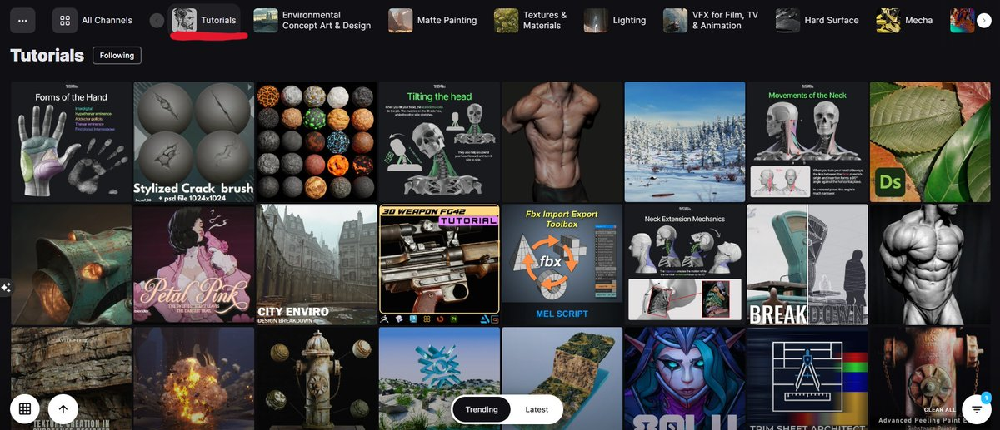
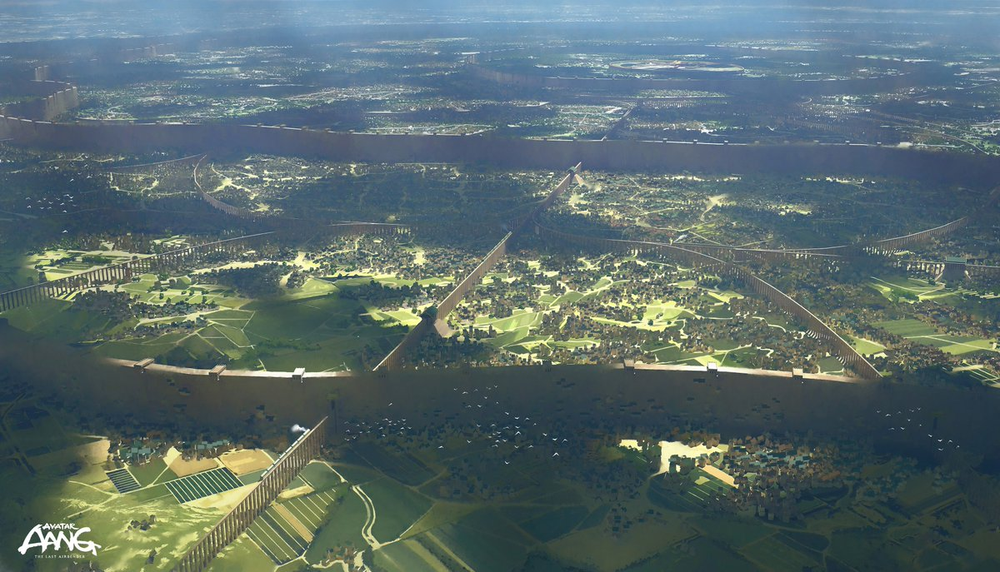
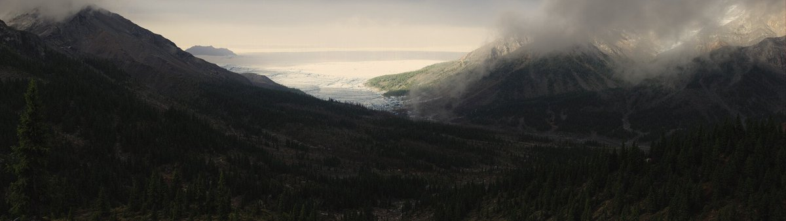
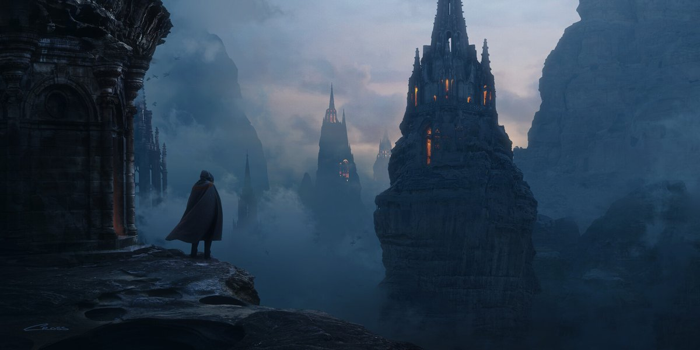
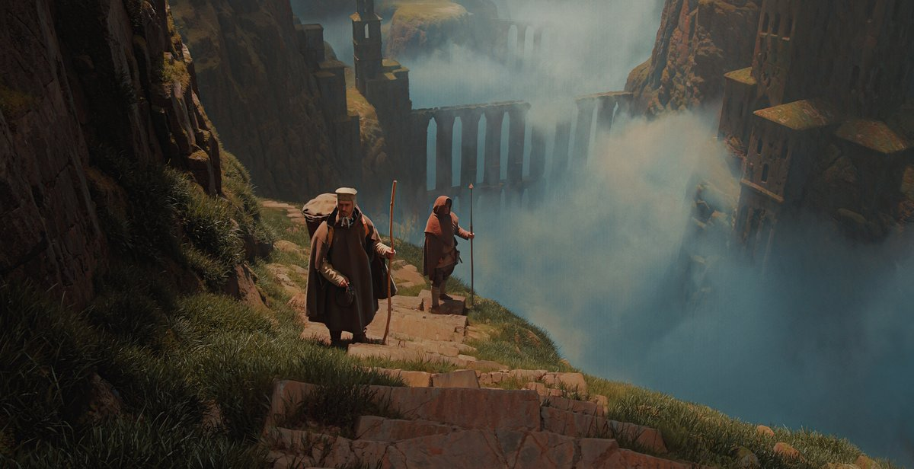
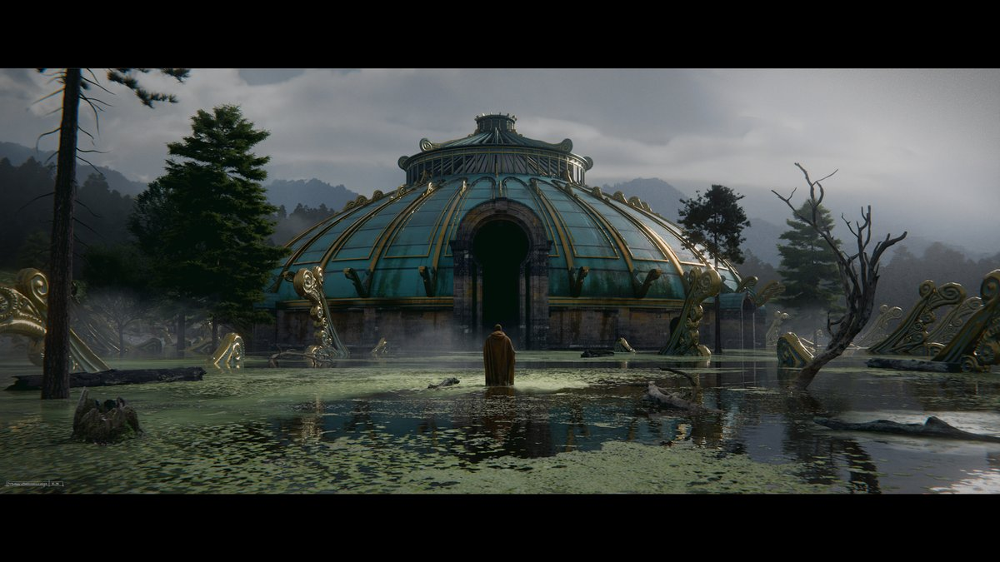
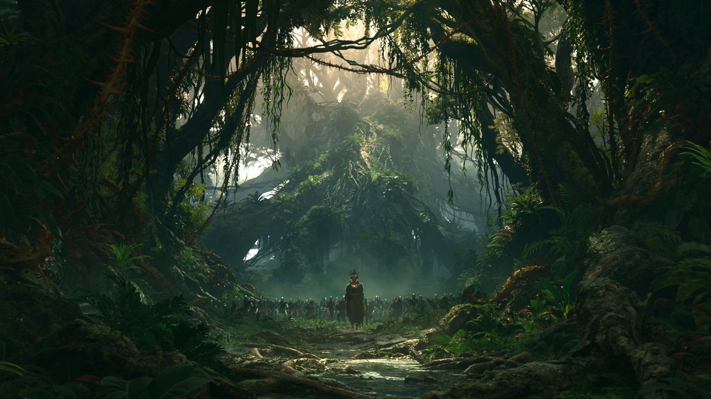
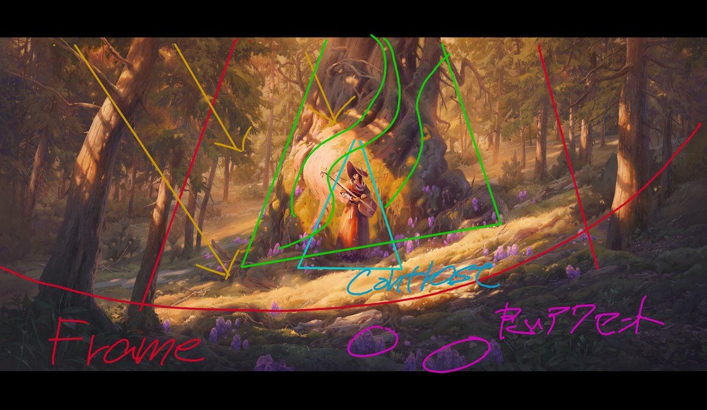
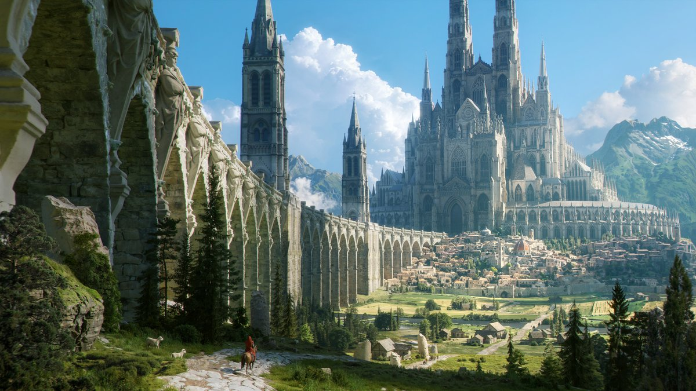
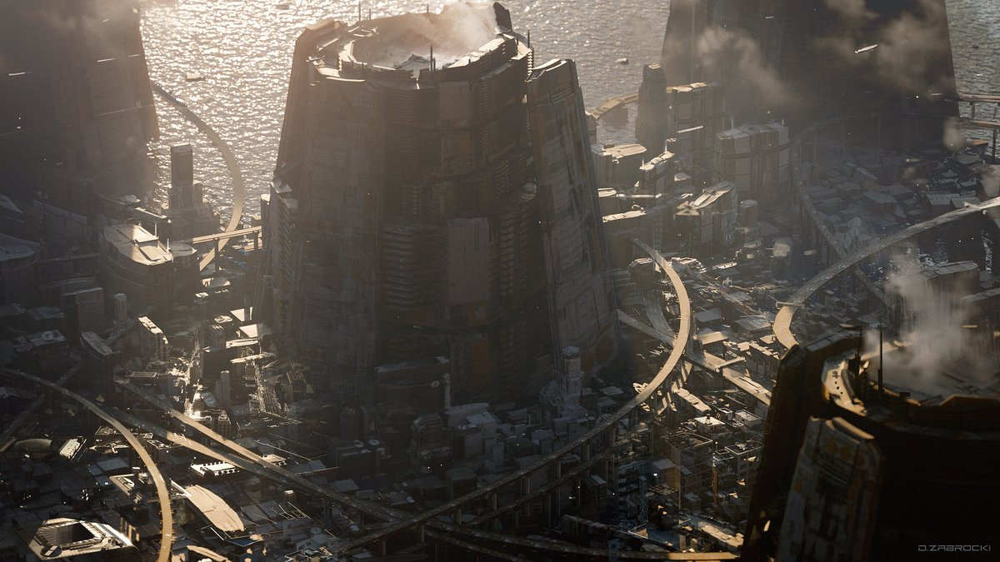

ArtStationの「Tutorial」「Technical Art」「Web and App Design」といったページには、見落とされがちだがTipsがまとまっていることが多いという活用法。
元ポスト
https://x.com/kuramaKageya/status/2016071805887513080

ArtStationの「Tutorial」「Technical Art」「Web and App Design」といったページには、見落とされがちだがTipsがまとまっていることが多いという活用法。









